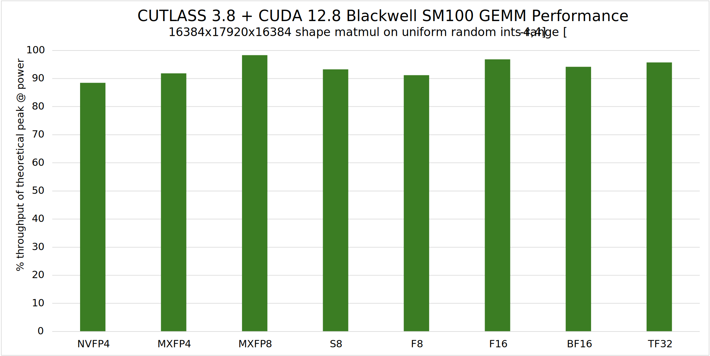
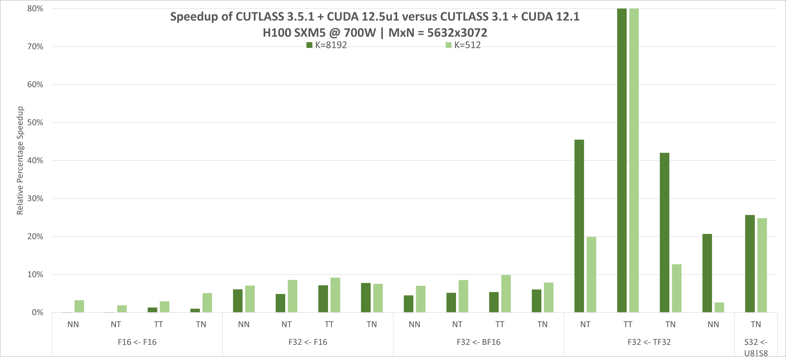
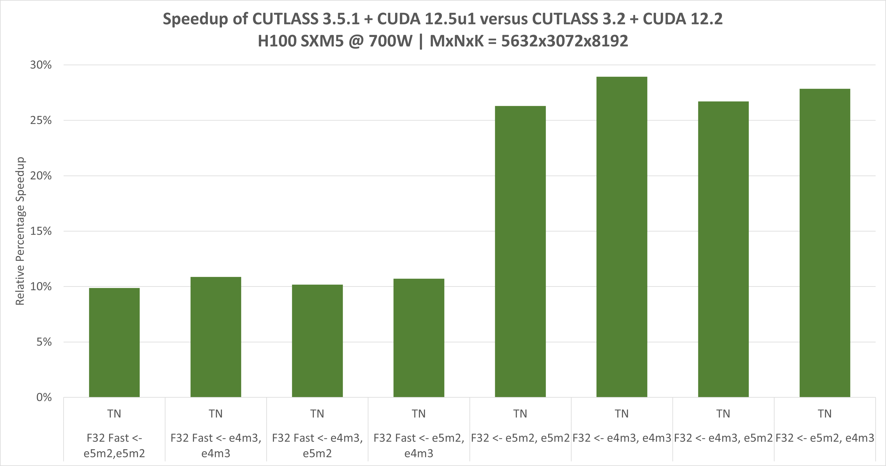

Overview#
CUTLASS 3.9.0#
CUTLASS 3.9.0 - March 2025
CUTLASS is a collection of CUDA C++ template abstractions for implementing high-performance matrix-matrix multiplication (GEMM) and related computations at all levels and scales within CUDA. It incorporates strategies for hierarchical decomposition and data movement similar to those used to implement cuBLAS and cuDNN. CUTLASS decomposes these “moving parts” into reusable, modular software components abstracted by C++ template classes. Primitives for different levels of a conceptual parallelization hierarchy can be specialized and tuned via custom tiling sizes, data types, and other algorithmic policy. The resulting flexibility simplifies their use as building blocks within custom kernels and applications.
To support a wide variety of applications, CUTLASS provides extensive support for mixed-precision computations, providing specialized data-movement and multiply-accumulate abstractions for FP64, FP32, TF32, FP16, BF16, FP32 emulation via tensor core instruction, 8b floating point types (e5m2 and e4m3), block scaled data types (NVIDIA NVFP4 and OCP standard MXFP4, MXFP6, MXFP8), narrow integer types (4 and 8b signed and unsigned integers), and binary 1b data types (where architectures allow for the native support of such data types). CUTLASS demonstrates optimal matrix multiply operations targeting the programmable, high-throughput Tensor Cores implemented by NVIDIA’s Volta, Turing, Ampere, Ada, Hopper, and Blackwell architectures.
In addition to GEMMs, CUTLASS implements high-performance convolution via the implicit GEMM algorithm. Implicit GEMM is the formulation of a convolution operation as a GEMM thereby taking advantage of CUTLASS’s modular GEMM pipeline. This allows CUTLASS to build convolutions by reusing highly-optimized GEMM components.
See the Quick Start Guide to get started quickly.
See the functionality docs for a more comprehensive list of kernel level features, data types, instructions, and minimum supported by CUTLASS on each GPU architecture.
What’s New in CUTLASS 3.9#
Support for Blackwell SM120 kernels for GeForce GPUs in CUTLASS 3.x API:
Set of examples that demonstrate the usage of the 3.x API for targeting Blackwell SM120 architecture:
Set of unit tests that demonstrate the usage of both sparse and dense Blackwell SM120 blockscaled GEMM.
Enhancement and new support of block-wise and group-wise GEMM for Hopper and Blackwell architectures:
Enhancement of blockwise GEMM for Hopper architecture.
Enhancement of groupwise GEMM for Hopper architecture.
Support for grouped GEMM with blockwise and groupwise scaling for Hopper architecture.
Support for blockwise GEMM for Blackwell architecture.
Support for groupwise GEMM for Blackwell architecture.
Support for grouped GEMM with blockwise and groupwise scaling for Blackwell architecture.
Added support for enhanced kernel performance search (auto-tuning) in CUTLASS profiler:
Sorting performance results by GFLOPs/second: Users can now sort the final performance report based on GFLOPs/second, making it easier to identify the most efficient kernels.
Exhaustive search for best kernel performance in GFLOPs/second: The profiler now searches for the best-performing kernel across a range of problem sizes, swizzle sizes, rasterization orders, and dynamic cluster configurations to maximize performance.
Performance search under a fixed GEMM shape: Enables exhaustive tuning within a fixed GEMM shape, exploring various kernel parameters to find the best configuration.
More detailed introductions and examples to leverage this feature can be found in profiler.md.
Note: CUTLASS 3.x builds are known to be down on Windows platforms for all CUDA toolkits. CUTLASS team is working on a fix.
See the CHANGELOG for details of all past releases and updates.
Performance#
CUTLASS primitives are very efficient. When used to construct device-wide GEMM kernels, they exhibit nearly optimal utilization of peak theoretical throughput. The figure below shows CUTLASS 3.8’s performance as a % of theoretical peak utilization on various input and output data types when run on NVIDIA Blackwell SM100 architecture GPU.

The two figures below show the continual CUTLASS performance improvements on an NVIDIA H100 (NVIDIA Hopper architecture) since CUTLASS 3.1. CUTLASS 3.5.1 was compiled with the CUDA 12.5u1 Toolkit. Tensor Core operations are implemented using CUDA’s mma and wgmma instructions.
 
CuTe#
CUTLASS 3.0 introduced a new core library, CuTe, to describe and manipulate tensors of threads and data.
CuTe is a collection of C++ CUDA template abstractions for
defining and operating on hierarchically multidimensional layouts of threads and data.
CuTe provides Layout and Tensor objects that compactly package the type,
shape, memory space, and layout of data, while performing the complicated indexing for the user.
This lets programmers focus on the logical descriptions of their algorithms while
CuTe does the mechanical bookkeeping for them. With these tools, we can quickly design,
implement, and modify all dense linear algebra operations.
The core abstractions of CuTe are hierarchically multidimensional layouts which can be composed with data arrays to represent tensors. The representation of layouts is powerful enough to represent nearly everything we need to implement efficient dense linear algebra. Layouts can also be combined and manipulated via functional composition, on which we build a large set of common operations such as tiling and partitioning.
CUTLASS 3.0 and beyond adopts CuTe throughout the GEMM hierarchy in its templates. This greatly simplifies the design and improves code composability and readability. More documentation specific to CuTe can be found in its dedicated documentation directory.
Compatibility#
Minimum requirements:
Architecture: Volta (compute capability 7.0)
Compiler: Must support at least C++17
CUDA Toolkit version: 11.4
CUTLASS requires a C++17 host compiler and performs best when built with the CUDA 12.8 Toolkit. It is also compatible with CUDA 11.4, CUDA 11.5, CUDA 11.6, CUDA 11.7, CUDA 11.8, and all other CUDA 12.x versions.
Operating Systems#
We have tested the following environments.
Operating System |
Compiler |
|---|---|
Ubuntu 18.04 |
GCC 7.5.0 |
Ubuntu 20.04 |
GCC 10.3.0 |
Ubuntu 22.04 |
GCC 11.2.0 |
Note: GCC 8.5.0 has known regressions regarding fold expressions and overloaded operators. Using GCC 7.5.0 or (preferred) GCC >= 9 is recommended.
Note: CUTLASS 3.x builds are known to be down on Windows platforms for all CUDA toolkits. CUTLASS team is working on a fix.
Hardware#
CUTLASS runs successfully on the following NVIDIA GPUs, and it is expected to be efficient on Volta, Turing, Ampere, Ada, and Hopper architecture based NVIDIA GPUs.
GPU |
CUDA Compute Capability |
Minimum CUDA Toolkit Required by CUTLASS-3 |
|---|---|---|
NVIDIA V100 Tensor Core GPU |
7.0 |
11.4 |
NVIDIA TitanV |
7.0 |
11.4 |
NVIDIA GeForce RTX 20x0 series |
7.5 |
11.4 |
NVIDIA T4 |
7.5 |
11.4 |
NVIDIA A100 Tensor Core GPU |
8.0 |
11.4 |
NVIDIA A10 |
8.6 |
11.4 |
NVIDIA GeForce RTX 30x0 series |
8.6 |
11.4 |
NVIDIA GeForce RTX 40x0 series |
8.9 |
11.8 |
NVIDIA L40 |
8.9 |
11.8 |
NVIDIA H100 Tensor Core GPU |
9.0 |
11.8 |
NVIDIA H200 Tensor Core GPU |
9.0 |
11.8 |
NVIDIA B200 Tensor Core GPU |
10.0 |
12.8 |
NVIDIA GeForce RTX 50x0 series |
10.0 |
12.8 |
Target Architecture#
In general, PTX code generated for one target architecture can be run on future architectures
(i.e., it is forward compatible).
However, CUDA 12.0 introduced the concept of “architecture-accelerated features” whose
PTX does not have forward compatibility guarantees.
Several Hopper and Blackwell PTX instructions fall under this category of
architecture-accelerated features, and thus require a sm_90a or sm100a target architecture
(note the “a” appended). For more details on this and other architecture-accelerated instructions,
please refer to the CUDA Documentation.
The target architecture information is passed on to CUTLASS via the cmake flag
CUTLASS_NVCC_ARCHS. In order to maximize performance on Hopper GH100,
users are required to build CUTLASS with 90a as the target architecture.
If a user accidentally builds a kernel which uses SM90a features
(e.g. Hopper Tensor Core Instructions), using the SM90 target
(note the lack of “a”), with either CUDA Toolkit 12 or 11.8,
the kernel is expected to fail with a runtime error.
cmake .. -DCUTLASS_NVCC_ARCHS="90a"
Or
cmake .. -DCUTLASS_NVCC_ARCHS="100a"
Note: The NVIDIA Blackwell SM100 architecture used in the datacenter
products has a different compute capability than the one underpinning
NVIDIA Blackwell GeForce RTX 50 series GPUs. As a result, kernels
compiled for Blackwell SM100 architecture with arch conditional features
(using sm100a) are not compatible with RTX 50 series GPUs.
Please refer to the functionality documentation for details on which kernels require which target architectures.
Documentation#
CUTLASS is described in the following documents and the accompanying Doxygen documentation.
Quick Start Guide - basics of building and running CUTLASS
Functionality - summarizes functionality available in CUTLASS
Efficient GEMM in CUDA - describes how GEMM kernels may be implemented efficiently in CUDA
CUTLASS 3.x Design - describes the CUTLASS 3.x design, its benefits, and how CuTe enables us to write much more composable components
GEMM API 3.x - describes the CUTLASS 3.x GEMM model and C++ template concepts
GEMM API 2.x - describes the CUTLASS 2.x GEMM model and C++ template concepts
Implicit GEMM Convolution - describes 2-D and 3-D convolution in CUTLASS
Code Organization - describes the organization and contents of the CUTLASS project
Terminology - describes terms used in the code
Programming Guidelines - guidelines for writing efficient modern CUDA C++
Fundamental types - describes basic C++ classes used in CUTLASS to represent numeric quantities and arrays
Layouts - describes layouts of matrices and tensors in memory
Tile Iterators - describes C++ concepts for iterating over tiles of matrices in memory
CUTLASS Profiler - command-line driven profiling application
CUTLASS Utilities - additional templates used to facilitate rapid development
Dependent kernel launch - describes a new feature in Hopper which allows overlapping dependent kernels in the same stream, and how it is used in CUTLASS.
Resources#
We have also described the structure of an efficient GEMM in our talk at the GPU Technology Conference 2018.
Building CUTLASS#
CUTLASS is a header-only template library and does not need to be built to be used by other
projects. Client applications should target CUTLASS’s include/ directory in their include
paths.
CUTLASS unit tests, examples, and utilities can be build with CMake.
The minimum version of CMake is given in the Quickstart guide.
Make sure the CUDACXX environment variable points to NVCC in the CUDA Toolkit installed
on your system.
$ export CUDACXX=${CUDA_INSTALL_PATH}/bin/nvcc
Create a build directory within the CUTLASS project, then run CMake. By default CUTLASS will build kernels
for CUDA architecture versions 5.0, 6.0, 6.1, 7.0, 7.5, 8.0, 8.6, 8.9, and 9.0.
To reduce compile time you can specify
the architectures to build CUTLASS for by changing the CMake configuration setting
CUTLASS_NVCC_ARCHS.
$ mkdir build && cd build
$ cmake .. -DCUTLASS_NVCC_ARCHS=80 # compiles for NVIDIA's Ampere Architecture
From the build/ directory, compile and run the CUTLASS unit tests by building the target test_unit with make.
The unit tests are organized as several binaries mirroring the top-level namespaces of CUTLASS,
and they may be executed in parallel via make’s -j command line argument.
$ make test_unit -j
...
...
...
[----------] Global test environment tear-down
[==========] 946 tests from 57 test cases ran. (10812 ms total)
[ PASSED ] 946 tests.
All tests should pass on supported platforms, though the exact number of tests may vary over time.
Project Structure#
CUTLASS is arranged as a header-only library along with Utilities, Tools, Examples, and unit tests. Doxygen documentation provides a complete list of files, classes, and template concepts defined in the CUTLASS project.
A detailed explanation of the source code organization may be found in the CUTLASS documentation, but several main components are summarized below.
CUTLASS Template Library#
include/ # client applications should target this directory in their build's include paths
cutlass/ # CUDA Templates for Linear Algebra Subroutines and Solvers - headers only
arch/ # direct exposure of architecture features (including instruction-level GEMMs)
conv/ # code specialized for convolution
epilogue/ # code specialized for the epilogue of gemm/convolution
gemm/ # code specialized for general matrix product computations
layout/ # layout definitions for matrices, tensors, and other mathematical objects in memory
platform/ # CUDA-capable Standard Library components
reduction/ # bandwidth-limited reduction kernels that do not fit the "gemm" model
thread/ # simt code that can be performed within a CUDA thread
transform/ # code specialized for layout, type, and domain transformations
* # core vocabulary types, containers, and basic numeric operations
cute/ # CuTe Layout, layout algebra, MMA/Copy atoms, tiled MMA/Copy
algorithm/ # Definitions of core operations such as copy, gemm, and operations on cute::tuples
arch/ # Bare bones PTX wrapper structs for copy and math instructions
atom/ # Meta-information either link to or built from arch/ operators
mma_atom.hpp # cute::Mma_Atom and cute::TiledMma
copy_atom.hpp # cute::Copy_Atom and cute::TiledCopy
*sm*.hpp # Arch specific meta-information for copy and math operations
* # Core library types such as Shape, Stride, Layout, Tensor, and associated operations
CUTLASS SDK Examples#
CUTLASS SDK examples apply CUTLASS templates to implement basic computations.
Tools#
tools/
library/ # CUTLASS Instance Library - contains instantiations of all supported CUTLASS templates
include/
cutlass/
library/
profiler/ # CUTLASS Profiler - command-line utility for executing operations in the
# CUTLASS Library
util/ # CUTLASS Utilities - contains numerous helper classes for
include/ # manging tensors in device memory, reference
cutlass/ # implementations for GEMM, random initialization
util/ # of tensors, and I/O.
Test#
The test/unit/ directory consist of unit tests implemented with Google Test that demonstrate
basic usage of Core API components and complete tests of the CUTLASS GEMM computations.
Instructions for building and running the Unit tests are described in the Quickstart guide.
Performance Profiling#
The tools/profiler/ directory contains a command-line utility for launching each of the GEMM kernels.
It can be built as follows:
$ make cutlass_profiler -j16
Building all GEMM and Convolution kernels (long build times)#
By default, only one tile size is instantiated for each data type, math instruction, and layout.
To instantiate all, set the following environment variable when running CMake from an empty build/ directory.
Beware, this results in tens of thousands of kernels and long build times.
This would also result in a large binary size and on some platforms linker to fail on building the library.
Therefore, it’s highly recommended to generate only a subset of kernels as demonstrated in the sub-section below.
$ cmake .. -DCUTLASS_NVCC_ARCHS=90a -DCUTLASS_LIBRARY_KERNELS=all
...
$ make cutlass_profiler -j16
Building a subset of GEMM and Convolution kernels (reduced build times)#
To compile strictly one kernel or a small set of kernels, a comma-delimited list of kernel names with wildcard characters may be used to reduce the set of kernels. The following examples show building exactly one or a subset of kernels for NVIDIA Ampere and Turing architecture:
Building a subset Tensor Core GEMM kernels#
To compile a subset of Tensor Core GEMM kernels with FP32 accumulation and FP16 input targeting NVIDIA Ampere and Turing architecture, use the below cmake command line:
$ cmake .. -DCUTLASS_NVCC_ARCHS='75;80' -DCUTLASS_LIBRARY_KERNELS=cutlass_tensorop_s*gemm_f16_*_nt_align8
...
$ make cutlass_profiler -j16
Example command line for profiling a subset of Tensor Core GEMM kernels is as follows:
./tools/profiler/cutlass_profiler --kernels=cutlass_tensorop_s*gemm_f16_*_nt_align8 --m=3456 --n=4096 --k=4096
...
=============================
Problem ID: 1
Provider: CUTLASS
OperationKind: gemm
Operation: cutlass_tensorop_s1688gemm_f16_256x128_32x2_nt_align8
Status: Success
Verification: ON
Disposition: Passed
reference_device: Passed
cuBLAS: Passed
Arguments: --gemm_kind=universal --m=3456 --n=4096 --k=4096 --A=f16:column --B=f16:row --C=f32:column --alpha=1 \
--beta=0 --split_k_slices=1 --batch_count=1 --op_class=tensorop --accum=f32 --cta_m=256 --cta_n=128 \
--cta_k=32 --stages=2 --warps_m=4 --warps_n=2 --warps_k=1 --inst_m=16 --inst_n=8 --inst_k=8 --min_cc=75 \
--max_cc=1024
Bytes: 118489088 bytes
FLOPs: 115992428544 flops
Runtime: 1.55948 ms
Memory: 70.7616 GiB/s
Math: 74378.8 GFLOP/s
=============================
...
Building one CUDA Core GEMM kernel#
To compile one SGEMM kernel targeting NVIDIA Ampere and Turing architecture, use the below cmake command line:
$ cmake .. -DCUTLASS_NVCC_ARCHS='75;80' -DCUTLASS_LIBRARY_KERNELS=cutlass_simt_sgemm_128x128_8x2_nn_align1
...
$ make cutlass_profiler -j16
Example command line for profiling single SGEMM CUDA kernel is as follows:
$ ./tools/profiler/cutlass_profiler --kernels=sgemm --m=3456 --n=4096 --k=4096
=============================
Problem ID: 1
Provider: CUTLASS
OperationKind: gemm
Operation: cutlass_simt_sgemm_128x128_8x2_nn_align1
Status: Success
Verification: ON
Disposition: Passed
cuBLAS: Passed
Arguments: --m=3456 --n=4096 --k=4096 --A=f32:column --B=f32:column --C=f32:column --alpha=1 --beta=0 --split_k_slices=1 \
--batch_count=1 --op_class=simt --accum=f32 --cta_m=128 --cta_n=128 --cta_k=8 --stages=2 --warps_m=4 \
--warps_n=2 --warps_k=1 --inst_m=1 --inst_n=1 --inst_k=1 --min_cc=50 --max_cc=1024
Bytes: 180355072 bytes
FLOPs: 115992428544 flops
Runtime: 6.73655 ms
Memory: 24.934 GiB/s
Math: 17218.4 GFLOP/s
=============================
Building a subset of Tensor Core Convolution kernels#
To compile a subset of Tensor core convolution kernels implementing forward propagation (fprop) with FP32 accumulation and FP16 input targeting NVIDIA Ampere and Turing architecture, use the below cmake command line:
$ cmake .. -DCUTLASS_NVCC_ARCHS='75;80' -DCUTLASS_LIBRARY_KERNELS=cutlass_tensorop_s*fprop_optimized_f16
...
$ make cutlass_profiler -j16
Example command line for profiling a subset of Tensor Core convolution kernels is as follows:
$ ./tools/profiler/cutlass_profiler --kernels=cutlass_tensorop_s*fprop_optimized_f16 --n=8 --h=224 --w=224 --c=128 --k=128 --r=3 --s=3
...
=============================
Problem ID: 1
Provider: CUTLASS
OperationKind: conv2d
Operation: cutlass_tensorop_s16816fprop_optimized_f16_128x128_32x5_nhwc
Status: Success
Verification: ON
Disposition: Passed
reference_device: Passed
Arguments: --conv_kind=fprop --n=8 --h=224 --w=224 --c=128 --k=128 --r=3 --s=3 --p=224 --q=224 --pad_h=1 --pad_w=1 \
--stride_h=1 --stride_w=1 --dilation_h=1 --dilation_w=1 --Activation=f16:nhwc --Filter=f16:nhwc --Output=f32:nhwc \
--conv_mode=cross --iterator_algorithm=optimized --alpha=1 --beta=0 --split_k_mode=serial --split_k_slices=1 \
--eq_gemm_provider=none --op_class=tensorop --accum=f32 --cta_m=128 --cta_n=128 --cta_k=32 --stages=5 \
--warps_m=2 --warps_n=2 --warps_k=1 --inst_m=16 --inst_n=8 --inst_k=16 --min_cc=80 --max_cc=1024
Bytes: 1130659840 bytes
FLOPs: 118482796544 flops
Runtime: 0.711496 ms
Memory: 1479.99 GiB/s
Math: 166526 GFLOP/s
=============================
...
Building one Convolution CUDA kernel#
To compile and run one CUDA Core convolution kernel implementing forward propagation (fprop) with F32 accumulation and FP32 input targeting NVIDIA Ampere and Turing architecture, use the below cmake command line:
$ cmake .. -DCUTLASS_NVCC_ARCHS='75;80' -DCUTLASS_LIBRARY_KERNELS=cutlass_simt_sfprop_optimized_128x128_8x2_nhwc
...
$ make cutlass_profiler -j16
Example command line for profiling one CUDA Core convolution kernel:
$ ./tools/profiler/cutlass_profiler --kernels=cutlass_simt_sfprop_optimized_128x128_8x2_nhwc --n=8 --h=224 --w=224 --c=128 --k=128 --r=3 --s=3
=============================
Problem ID: 1
Provider: CUTLASS
OperationKind: conv2d
Operation: cutlass_simt_sfprop_optimized_128x128_8x2_nhwc
Status: Success
Verification: ON
Disposition: Passed
reference_device: Passed
Arguments: --conv_kind=fprop --n=8 --h=224 --w=224 --c=128 --k=128 --r=3 --s=3 --p=224 --q=224 --pad_h=1 --pad_w=1 \
--stride_h=1 --stride_w=1 --dilation_h=1 --dilation_w=1 --Activation=f32:nhwc --Filter=f32:nhwc --Output=f32:nhwc \
--conv_mode=cross --iterator_algorithm=optimized --alpha=1 --beta=0 --split_k_mode=serial --split_k_slices=1 \
--eq_gemm_provider=none --op_class=simt --accum=f32 --cta_m=128 --cta_n=128 --cta_k=8 --stages=2 --warps_m=4 \
--warps_n=2 --warps_k=1 --inst_m=1 --inst_n=1 --inst_k=1 --min_cc=50 --max_cc=1024
Bytes: 2055798784 bytes
FLOPs: 118482796544 flops
Runtime: 7.34266 ms
Memory: 260.752 GiB/s
Math: 16136.2 GFLOP/s
=============================
More Details on Compiling CUTLASS Kernels and CUTLASS Profiler#
Please follow the links for more CMake examples on selectively compiling CUTLASS kernels:
Further details about the CUTLASS Profiler are described here.
About#
CUTLASS is released by NVIDIA Corporation as Open Source software under the 3-clause “New” BSD license.
Contributors#
The official list of CUTLASS developers and contributors is available here: CONTRIBUTORS.
Copyright#
Copyright (c) 2017 - 2025 NVIDIA CORPORATION & AFFILIATES. All rights reserved. SPDX-License-Identifier: BSD-3-Clause
Redistribution and use in source and binary forms, with or without
modification, are permitted provided that the following conditions are met:
1. Redistributions of source code must retain the above copyright notice, this
list of conditions and the following disclaimer.
2. Redistributions in binary form must reproduce the above copyright notice,
this list of conditions and the following disclaimer in the documentation
and/or other materials provided with the distribution.
3. Neither the name of the copyright holder nor the names of its
contributors may be used to endorse or promote products derived from
this software without specific prior written permission.
THIS SOFTWARE IS PROVIDED BY THE COPYRIGHT HOLDERS AND CONTRIBUTORS "AS IS"
AND ANY EXPRESS OR IMPLIED WARRANTIES, INCLUDING, BUT NOT LIMITED TO, THE
IMPLIED WARRANTIES OF MERCHANTABILITY AND FITNESS FOR A PARTICULAR PURPOSE ARE
DISCLAIMED. IN NO EVENT SHALL THE COPYRIGHT HOLDER OR CONTRIBUTORS BE LIABLE
FOR ANY DIRECT, INDIRECT, INCIDENTAL, SPECIAL, EXEMPLARY, OR CONSEQUENTIAL
DAMAGES (INCLUDING, BUT NOT LIMITED TO, PROCUREMENT OF SUBSTITUTE GOODS OR
SERVICES; LOSS OF USE, DATA, OR PROFITS; OR BUSINESS INTERRUPTION) HOWEVER
CAUSED AND ON ANY THEORY OF LIABILITY, WHETHER IN CONTRACT, STRICT LIABILITY,
OR TORT (INCLUDING NEGLIGENCE OR OTHERWISE) ARISING IN ANY WAY OUT OF THE USE
OF THIS SOFTWARE, EVEN IF ADVISED OF THE POSSIBILITY OF SUCH DAMAGE.